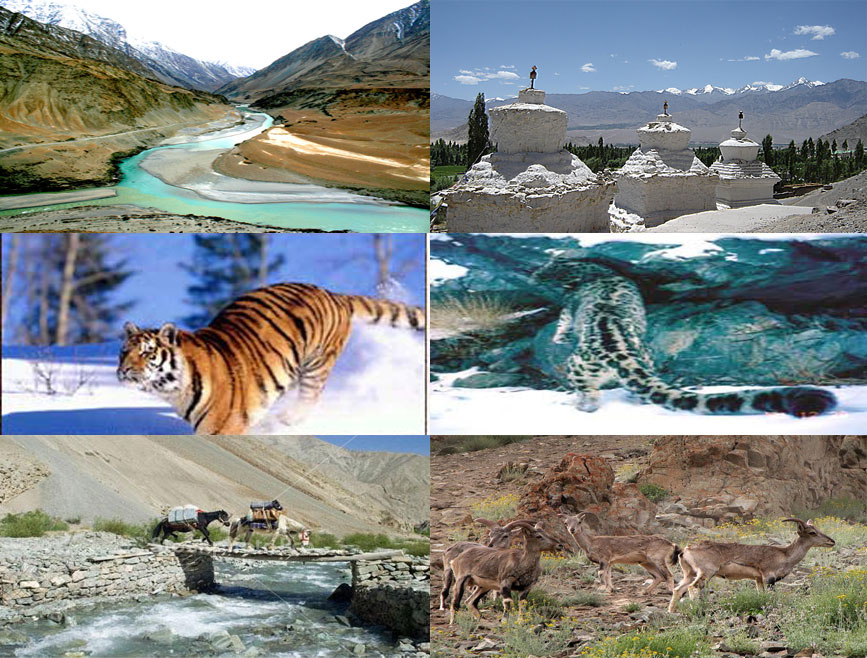
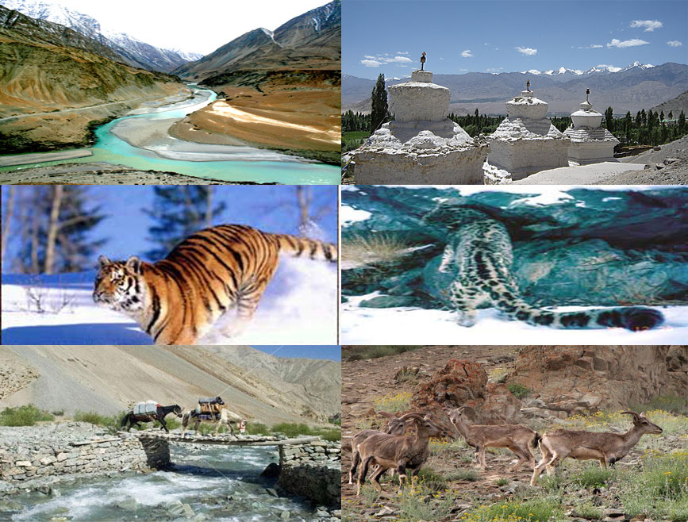

Hemis National Park
This park is located in the Ladakh region is one of the most favorite tourist and trekking spots in Ladakh for a variety of reasons. Established in 1981, this park is also known as Hemis high altitude national park of India.
It got its name after the famous monastery of Ladakh i.e the Hemis Gompa Monastery. With the Indus and Zanskar Rivers flowing at its frontiers, the exotic landscape and un-spoilt surroundings, this park has become popular for being one of the most picturesque national parks to visit in India.
From visiting Tibetan settlements to photographing nature and witnessing rare animals to indulging in adventures, you can choose to do a lot of things in Hemis National Park. This Park is a photographers delight, so before planning a visit to this place, try to brush up your photography skills or get a new camera for sure. In case you are all prepped up to visit this Indian National Park, here are all the details for you.
 
